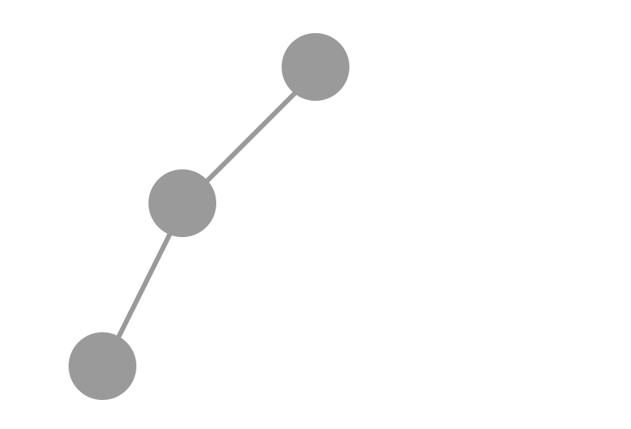
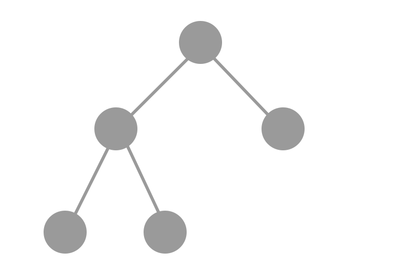
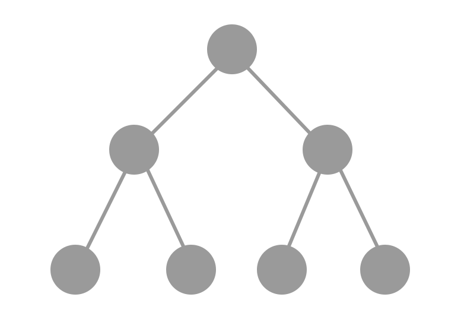
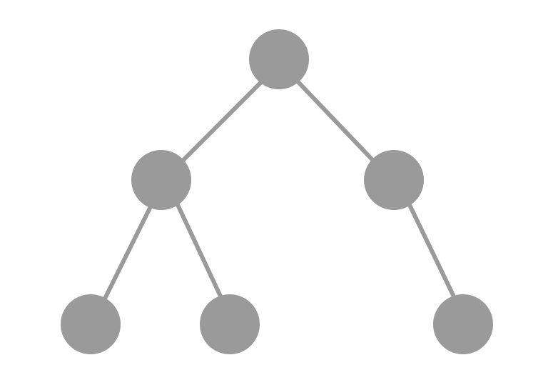
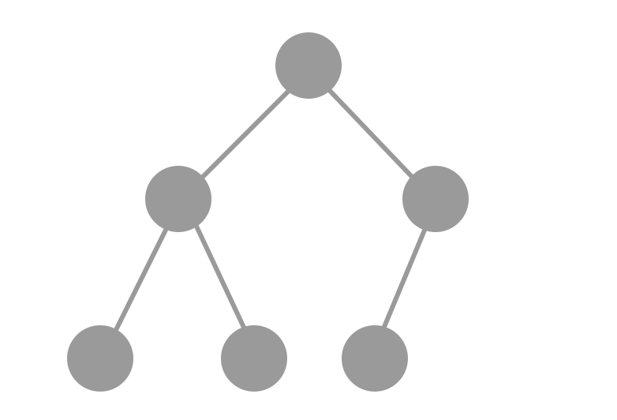
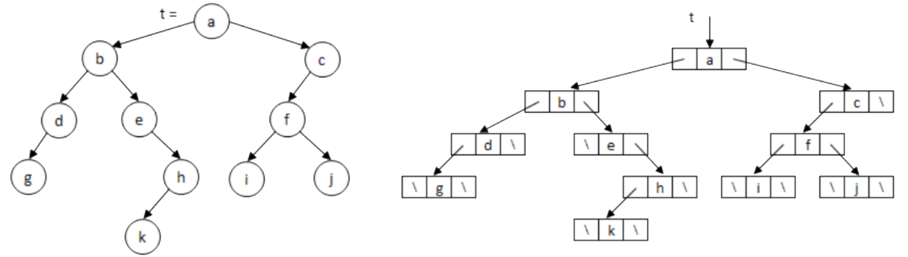
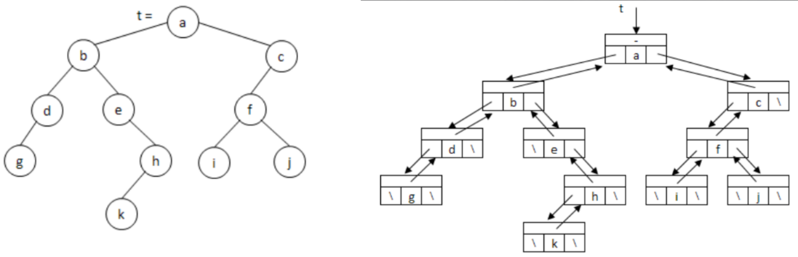
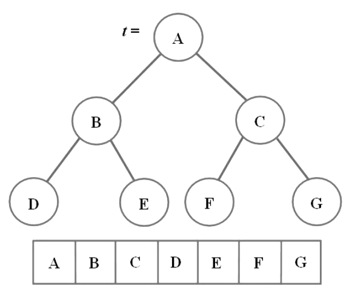
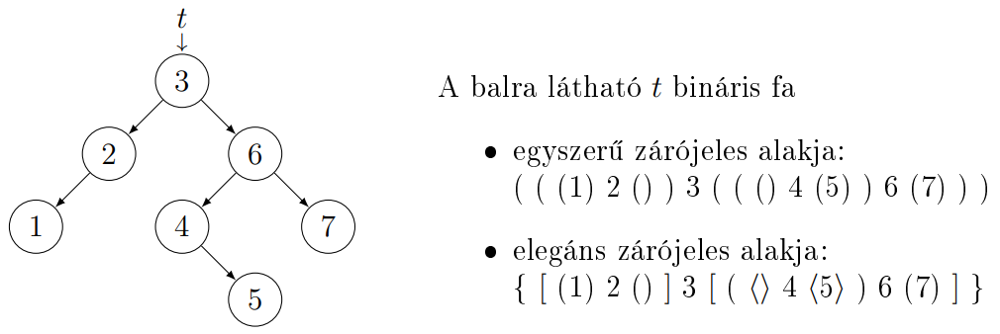
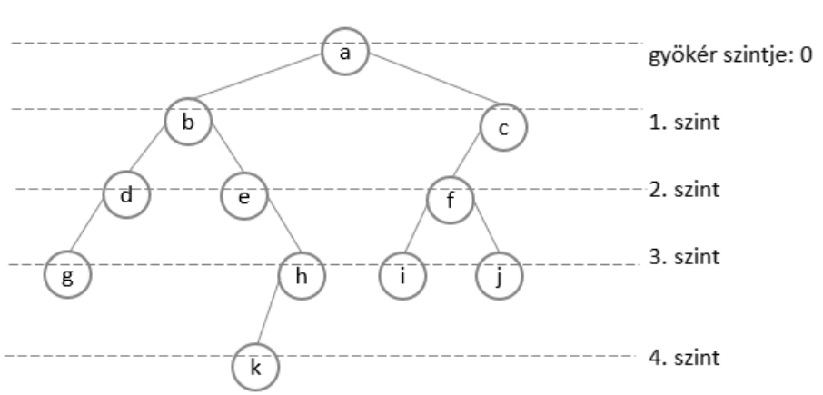

A bináris fák esetében minden adatelemnek, csúcsnak legfeljebb kettő
rákövetkezője van, egy bal és/vagy egy jobb rákövetkezője. Ezeket a rákövetkezőket a csúcs
gyerekeinek nevezzük. A csúcs a gyerekeinek szülője, a gyerekei egymás
testvérei. Ha egy
csúcsnak nincs gyereke levél, ha pedig nincs szülője gyökér csúcs. Belső csúcs
alatt nem
levél csúcsot értünk. A fában egy csúcs leszármazottai a gyerekei és a gyerekei
leszármazottai.
Egy
csúcs ősei a szülője és a szülője ősei. A csúcs bal/jobb gyerekéhez tartozó fát a csúcs
bal/jobb
részfájának nevezzük. Az üres fának nincs csúcsa.
Ha a fában egy tetszőleges csúcsnak legfeljebb $r$ rákövetkezője van, $r$-áris
fáról
beszélünk. Tehát a bináris fa és a 2-áris fa lényegében ugyanazt jelenti.
Azokat a fákat, amelyekben minden belső csúcsnak egy gyereke van, listává
torzult
fáknak nevezzük.

Azokat a bináris fákat, amelyekben minden belső csúcsnak két gyereke van,
szigorúan bináris fáknak nevezzük (strictly binary tree vagy full binary tree).

Ha egy szigorúan bináris fának minden levele azonos szinten van, azaz teljes a
kitöltöttsége, tökéletes bináris fákról beszélünk (perfect binary tree).

Ha egy tökéletes bináris fa levélszintjéről nulla, egy vagy több levelet
elveszünk, de nem az összeset, az eredményt majdnem teljes bináris fának
nevezzük (nearly complete binary tree). Az üres fát is majdnem teljesnek tekintjük, így minden tökéletes bináris
fa egyben majdnem teljes is (fordítva viszont nem igaz).

Egy majdnem teljes bináris fa balra tömörített, ha az alsó szintjén egyetlen
levéltől balra sem lehet új levelet beszúrni. A balra tömörített, majdnem teljes bináris fákat más néven teljes (complete)
bináris fáknak is nevezzük

Bináris fák bejárásai:
$t \rightarrow left$ és $t \rightarrow
right$ helyett szokás $left(t)$ és $right(t)$ jelölést is használni. Az üres fát szokták
$\Omega$-val
jelölni, így $t = \emptyset$ helyett $t = \Omega$ is használható. Láncolt ábrázolású bináris fák
esetén
a bejáró algoritmusok paramétere lehetne $t:Node^*$, vagy $t:Node3^*$.
Preorder:
Először feldolgozzuk a gyökérelemet, majd a bal és jobb részfáját.
$t \neq \emptyset$
|
| $process(t)$
|
$\text{SKIP}$ |
| $preorder(t
\rightarrow left)$ |
| $preorder(t
\rightarrow right)$ |
|
$t \neq
\emptyset$ |
| $process(t)$ |
| $preorder(t \rightarrow left)$ |
| $t:=t \rightarrow right$ |
Inorder:
Először feldolgozzuk a bal részfát, majd a gyökérelemet és végül a jobb részfát.
$t \neq \emptyset$
|
| $inorder(t
\rightarrow left)$ |
$\text{SKIP}$ |
| $process(t)$
|
| $inorder(t
\rightarrow right)$ |
|
$t \neq
\emptyset$ |
| $inorder(t \rightarrow left)$ |
| $process(t)$ |
| $t:=t \rightarrow right$ |
Postorder:
Először feldolgozzuk a bal részfát, majd a jobb részfát és végül a gyökérelemet.
$t \neq \emptyset$
|
| $postorder(t
\rightarrow left)$ |
$\text{SKIP}$ |
| $postorder(t
\rightarrow right)$ |
| $process(t)$
|
Szintfolytonos:
A bináris fa csúcsait a mélységük szerinti sorrendben látogatjuk meg, egy szinten
belül balról jobbra. Ehhez egy sort használunk. Műveletigénye $\Theta (n)$, ahol $n$ a csúcsok
száma,
hiszen minden csúcs egyszer kerül bele a sorba és minden iterációban kiveszünk egyet a sorból.
$t \neq \emptyset$
|
| $Q : Queue$ |
$\text{SKIP}$ |
| $Q.add(t)$ |
|
$\neg
Q.isEmpty()$ |
| $s := Q.rem()$ |
| $process(s)$ |
$s \rightarrow left \neq \emptyset$
|
| $Q.add(s
\rightarrow left)$ |
$\text{SKIP}$ |
$s \rightarrow right \neq \emptyset$
|
| $Q.add(s
\rightarrow right)$ |
$\text{SKIP}$ |
Bináris fák ábrázolásai:
Láncolt ábrázolása:
A bináris fa pointeres ábrázolásában is mutatók valósítják meg a rákövetkezőket,
a
bal és jobb gyerek pointerek segítségével. A három pointeres esetben a szülő pointer is megjelenik.
Két pointeres csúcsokkal reprezentáljuk a bináris fát:
| $Node$ |
$+ \space key : \mathcal{T}$
$+ \space left, right : Node^*$ |
$+ \space Node() \space \{ left := right := \emptyset \}$
$+ \space
Node(x : \mathcal{T}) \space \{ left := right := \emptyset ; key := x \}$ |

Három pointeres csúcsokkal reprezentáljuk a bináris fát:
| $Node3$ |
$+ \space key : \mathcal{T}$
$+ \space left, right, parent : Node3^*$
|
$+ \space Node3(p : Node3^*) \space \{ left := right := \emptyset ;
parent := p \}$
$+ \space Node3(x : \mathcal{T}, p : Node3^*) \space \{ left := right :=
\emptyset ; parent := p ; key := x \}$ |

Aritmetikai (tömbös) ábrázolása:
A tömbben a szintfolytonos bejárás szerint szerepelnek a csúcsok. A fa nem
feltétlenül teljes fa, ezért azokra a helyekre, ahol nincs csúcs, egy $x$-et írunk. A tömbben a
szülő-gyerek és a gyerek-szülő kapcsolatokat az alábbi képletek
adják:
- csúcs indexe: $i$
- csúcs bal gyereke: $2 \cdot i + 1$
- csúcs jobb gyereke: $2 \cdot i + 2$
- csúcs szülője: $\lfloor \frac{i - 1}{2} \rfloor$
- hanyadik szinten van a csúcs: $\lfloor log_{2} \space (i + 1) \rfloor$

A 2. és 3. összefüggés értelemszerűen nem-levél csúcsokra alkalmazható, míg a
4. képlet a gyökértől különböző csúcsokra érvényes.
Zárójelezett, szöveges formája:
Az üres fát az üres string reprezentálja. Tetszőleges nemüres bináris fa
zárójeles,
azaz szöveges alakja:
$( \space balRészFa \space Gyökér \space jobbRészFa \space )$

A zárójeleket elhagyva, a fa inorder bejárását kapjuk.
Bináris fák mérete és magassága:
Bináris fa mérete alatt a csúcsainak számát értjük. Beszélhetünk a fa
szintjeiről is. A gyökér van a nulladik szinten. A fa magassága ($h$) egyenlő a
legmélyebben
fekvő levelei szintszámával. Néha szoktak a fa mélységéről is beszélni, ami ugyanaz,
mint a
magassága. Az üres fa magassága $−1$.
$t \neq \emptyset$
|
| $\text{return} \space 1+max(h(t \rightarrow
left), h(t
\rightarrow right))$ |
$\text{return} \space -1$ |

Műveletigény:
Mind a négy fabejárásra teljesül az, hogy műveletigényük $\Theta (n)$, ahol $n$ a
csúcsok száma, ugyanis a bináris fa minden csúcsát pontosan egyszer érintik. A preorder és az
inorder
bejárások hatékonysága konstans szorzóval javítható, ha a végrekurziókat ciklussá alakítjuk.
Gyakorlati alkalmazása:
Egy speciális bináris fa a kupac, amellyel megvalósítható a kupacrendezés, amely
egyesíti a beszúró rendezés és az összefésülő rendezés jó tulajdonságait, ugyanis helyben rendez és
futási ideje $O (n \cdot log \space n)$.
Speciális bináris fa még az AVL fa és a piros-fekete fa is, amelyek szintén
hasznos
adatszerkezetek.
Huffmann kódolásnál is használják.